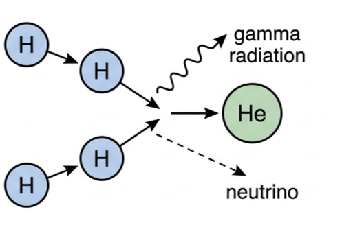
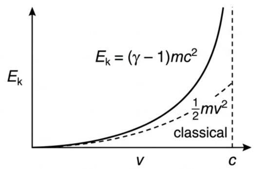
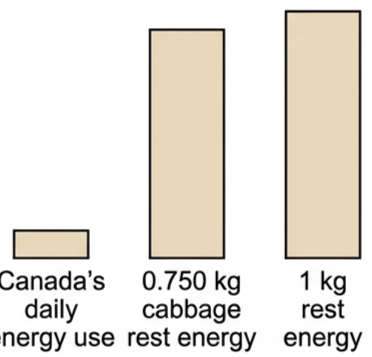
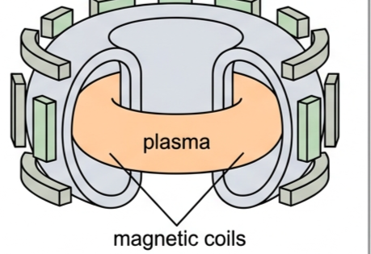
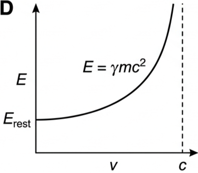

Part of A.5 Galilean and Special Relativity
· Unit A — IB Physics 2023
6 Lesson 6 of 7 · A.5 Galilean and Special Relativity
Mass-Energy Equivalence
Special relativity does not just change space and time — it merges mass and energy into one conserved quantity. This lesson builds \(E=mc^2\) from relativistic momentum, and shows why even a tiny rest mass carries an enormous amount of energy.
☀️ Hook – the Sun runs on mass
Every second, the Sun's core fuses hydrogen nuclei into helium. The helium nucleus produced has slightly less mass than the four protons that went into it. That missing mass has not vanished — it has been converted directly into the gamma radiation and kinetic energy that eventually reach us as sunlight.

Fig 1 — Four hydrogen nuclei fuse into one helium nucleus. The mass difference between reactants and products is released as gamma radiation, kinetic energy, and neutrinos.
💡 Diagnostic question (think – then read on) — if mass and energy are really the same thing, why don't ordinary chemical reactions (burning wood, a battery discharging) noticeably lose mass? They do lose mass — but the energy released per kilogram of fuel is so small that the corresponding \(\Delta m = E/c^2\) is far below what any balance can detect. Only nuclear reactions release enough energy for the mass change to be measurable.
📐 From relativistic momentum to total energy
Applying special relativity to Newtonian work and kinetic energy, so that acceleration and force are related by a factor of \(\sqrt{1-v^2/c^2}\), the relativistic mass of an object of rest mass \(m\) moving at speed \(v\) becomes:
Relativistic mass
$$m_{\text{relativistic}} = \frac{m}{\sqrt{1-v^2/c^2}}$$
Using the equations of special relativity, Einstein showed that the total energy of an object with rest mass \(m\) moving at speed \(v\) is:
Total relativistic energy
$$E_{\text{total}} = \frac{mc^2}{\sqrt{1-v^2/c^2}}$$
When the object is at rest (\(v=0\)), this simplifies to Einstein's most famous equation:
Rest energy
$$E_{\text{rest}} = mc^2$$
This means the rest mass of an object and its energy are equivalent. The rest energy, \(E_{\text{rest}}\), is the amount of energy an object at rest has with respect to an observer, and it does not change. As with relativistic momentum, the mass used here is always the object's rest mass (proper mass).
🚀 Kinetic energy in relativity
When an object is moving, its total energy exceeds its rest energy. The relativistic kinetic energy, \(E_{\text{k}}\), is the energy of an object in excess of its rest energy — the difference between total energy and rest energy:
As speed increases, the object behaves as if it had a larger mass than at low speeds — kinetic energy can grow very large, but the object's speed never quite reaches \(c\).

Fig 2 — However large the kinetic energy, speed never reaches \(c\): the relativistic curve has a vertical asymptote at \(v=c\), unlike the classical parabola.
📖 Principle of conservation of mass-energy — rest mass and energy are equivalent, so the total mass-energy of an isolated system is constant. Mass and energy shifted from two separate conserved quantities to one unified quantity, in the same way that space and time shifted to a unified space-time.
⚛️ How large is rest energy?
Since \(c\) is such a large number, rest energy is enormous even for a small rest mass. A rest mass of only 1 kg corresponds to:
For comparison, Canada's total daily energy consumption in 2008 was \(2.4\times10^{16}\) J — less than a third of the energy in 1 kg of rest mass. This is why scientists search for ways to convert mass into energy: the most efficient fission reactors convert less than 1% of their nuclear fuel's rest mass to energy, yet their output is enormous.

Fig 5 — Rest energy is measured in a completely different league from everyday energy use: even a 0.750 kg cabbage's rest energy, if fully released, would dwarf a day of national energy consumption.
Mass-energy conversion in chemical reactions. Many scientists think mass-energy conversion occurs in every energy-releasing process, including chemical reactions — but the mass change is tiny. Burning 1.0 kg of coal releases energy equivalent to a mass of only about \(3.6\times10^{-10}\) kg, far too small to detect even with the best electronic balance. Only at the nuclear level or smaller does mass-energy conversion become significant and measurable — the regime the Large Hadron Collider operates in.
🔬 Controlled fusion
Since the late 1940s, physicists have sought controlled nuclear fusion reactions, similar to those powering the Sun. Fusion also converts mass to energy, but uses hydrogen — the most common element in the universe — as fuel, and produces fewer radioactive waste products than fission. Researchers have not yet overcome the challenge of confining hydrogen at the temperatures and pressures fusion requires.

Fig 3 — A tokamak uses magnetic fields to confine plasma at extreme temperatures, recreating conditions similar to the Sun's interior in the search for sustained, controlled fusion.
📈 Graph mastery — energy vs. speed
Graph type
Axes (X, Y)
Shape
What to read
Kinetic energy vs. speed
Speed \(v\), 0 to \(c\) · \(E_{\text{k}}\)
Rises steeply near \(v=c\); vertical asymptote at \(v=c\); classical parabola shown for comparison
Infinite energy would be needed to reach \(c\) — speed never gets there, however large \(E_{\text{k}}\) becomes
Total energy vs. speed
Speed \(v\), 0 to \(c\) · \(E_{\text{total}}\)
Starts at \(E_{\text{rest}}\) when \(v=0\); diverges to infinity as \(v \to c\)
The \(y\)-intercept is the rest energy; the curve's divergence is the Lorentz factor \(\gamma\) blowing up
Fig 2 (repeated) — Kinetic energy vs. speed.

Fig 4 — Total energy vs. speed. The curve never starts at zero — even a stationary object carries \(E_{\text{rest}}\).
✍️ Worked example 1 – converting a cabbage entirely to energy
The average home in Canada uses \(3.6\times10^{10}\) J of energy per day. Imagine a cabbage with a rest mass of 0.750 kg could be completely converted to another form of energy. (a) Calculate how much energy is released. (b) Determine the number of days this could supply an average Canadian home.
1
Identify: a complete mass-to-energy conversion at rest, so \(E_{\text{rest}} = mc^2\). Given: \(m=0.750\) kg, \(c=3.0\times10^8\) m/s.
2
Data: \(E_{\text{home}} = 3.6\times10^{10}\) J per day.
Answer: (a) \(E_{\text{rest}} = 6.8\times10^{16}\ \text{J}\). (b) \(d = 1.9\times10^{6}\) days — over 5000 years of household energy from one cabbage.
✍️ Worked example 2 – an electron's energy in electron-volts
For subatomic particles, joules are inconvenient, so physicists use the electron-volt (eV): the work done on an electron by 1 V of potential, where \(1\ \text{eV} = 1.60\times10^{-19}\ \text{J}\). An electron of rest mass \(9.11\times10^{-31}\) kg moves at \(0.900c\) in a laboratory. Calculate its rest energy, total energy, and kinetic energy in eV.
1
Identify: use \(E_{\text{rest}}=mc^2\), \(E_{\text{total}}=mc^2/\sqrt{1-v^2/c^2}\), then \(E_{\text{k}}=E_{\text{total}}-E_{\text{rest}}\), converting joules to eV throughout.
2
Data: \(m=9.11\times10^{-31}\) kg, \(v=0.900c\), \(1\ \text{eV}=1.60\times10^{-19}\) J.
Mass-energy conversion through nuclear fission led to nuclear power and nuclear weapons, and scientists hope fusion experiments will eventually deliver clean, efficient energy. Both rely on the same physics: a measurable mass deficit between reactants and products, converted to energy via \(E=mc^2\).
✓ Examiner tip: "the mass turns into energy" earns nothing on its own — state that the rest mass of the products is less than the rest mass of the reactants, and that this mass deficit \(\Delta m\) equals \(\Delta E / c^2\).
🚀 HL Extension – why speed never equals \(c\)
From \(E_{\text{total}} = \gamma mc^2\) with \(\gamma = 1/\sqrt{1-v^2/c^2}\), as \(v \to c\), \(\gamma \to \infty\), so an infinite amount of energy would be needed to accelerate any object with nonzero rest mass to the speed of light. This is why \(c\) is an unreachable limit for massive particles, not merely a large practical speed. Challenge: a particle's kinetic energy equals its rest energy. What is \(\gamma\), and what speed is this? (Answer: \(E_{\text{total}} = 2E_{\text{rest}}\), so \(\gamma=2\) and \(v = 0.866c\).)
⚠️ Trap corner – common mistakes
Misconception
Correct view
An object's rest mass literally increases as it speeds up
Rest mass \(m\) is invariant. What grows is the object's total energy (and momentum); express results with \(E_{\text{total}}=\gamma mc^2\), not a "heavier" object
Mass-energy conversion should be visible in everyday chemical reactions
It happens in every reaction, but \(\Delta m = \Delta E/c^2\) is far too small to measure chemically — only nuclear-scale energies give a detectable mass change
A particle with enough kinetic energy could eventually reach \(c\)
As \(v\to c\), \(\gamma\to\infty\), so \(E_{\text{k}}\) grows without bound — no finite energy input ever reaches \(v=c\) for an object with rest mass
\(E=mc^2\) only applies to nuclear physics
It is a universal statement about any object at rest; nuclear reactions are simply where the mass deficit is large enough to be measurable
⚠️ Most common slip: using relativistic mass \(m/\sqrt{1-v^2/c^2}\) in place of rest mass \(m\) inside \(E_{\text{rest}}=mc^2\) — rest energy always uses the invariant rest mass.
E_rest = mc²E_total = mc²/√(1−v²/c²)E_k = E_total − E_restγ = 1/√(1−v²/c²)rest mass is invariantconservation of mass-energy1 eV = 1.60×10⁻¹⁹ Jv never reaches c
Practice check — multiple choice
1. Which mass should be used in \(E_{\text{rest}} = mc^2\)?
A The relativistic mass \(m/\sqrt{1-v^2/c^2}\)
B The rest (proper) mass
C Whichever mass is larger
D The average of rest and relativistic mass
2. As an object's speed approaches \(c\), its kinetic energy
A approaches a fixed maximum value
B stays proportional to \(v^2\), as in classical mechanics
C increases without bound
D becomes negative
3. Why is mass loss undetectable in ordinary chemical reactions but measurable in nuclear reactions?
A Nuclear reactions release far more energy per unit mass, so \(\Delta m = \Delta E/c^2\) becomes large enough to measure
B Mass-energy equivalence does not apply to chemical reactions
C Chemical reactions conserve mass exactly, with no exceptions
D \(c\) is smaller inside a nucleus
4. An electron's rest energy is 0.512 MeV. If its total energy is 1.024 MeV, its kinetic energy is
A 0.256 MeV
B 0.512 MeV
C 1.024 MeV
D 1.536 MeV
5. The principle of conservation of mass-energy states that
A rest mass and energy are equivalent, and their total is conserved
B mass is always conserved separately from energy
C energy can be created from nothing in nuclear reactions
D only kinetic energy is conserved in nuclear fusion
Practice check — fill in the blanks
Complete the statements:
The energy an object has at rest with respect to an observer is called its , given by \(E_{\text{rest}} = mc^2\). The mass used in this equation is always the object's mass. Relativistic kinetic energy is the energy of an object in excess of its energy. As speed approaches \(c\), the Lorentz factor \(\gamma\) approaches , so no object with rest mass can ever reach the speed of . The unified conservation law that replaces separate conservation of mass and energy is called conservation of .
Exam‑style questions
Exam question · Calculate
Q1. A cellphone has a rest energy of \(2.25\times10^{16}\) J. Calculate its rest mass. [2 marks]
Q2. A proton moves at 0.800\(c\) through a particle accelerator. In the accelerator's frame, calculate (a) the total and (b) the kinetic energies in MeV. [4 marks]
Q3. A CANDU fuel bundle has a mass of 23 kg. (a) Calculate the electrical energy produced if the entire bundle were converted to energy. (b) An average Canadian home uses \(3.6\times10^{10}\) J per day. Determine how many days one bundle could theoretically supply. [4 marks]
Q6. In your own words, explain how the equation \(E_{\text{rest}}=mc^2\) leads to the conservation of mass-energy. [2 marks]
✓ Since rest mass and energy are related by a fixed constant \(c^2\), any mass lost by a system must appear as an equal amount of energy gained (or vice versa) — so mass and energy are no longer separately conserved, but their sum, mass-energy, is. ✓ This mirrors how space and time merged into a single conserved space-time in special relativity.
Exam question · Determine
Q7. The chemical energy released by 1.00 kg of TNT is about \(4.20\times10^{6}\) J. Determine the rest mass that, if converted, would produce this same rest energy. [2 marks]
✓ \(m = E/c^2 = 4.20\times10^{6}/(3.0\times10^8)^2\) ✓ \(m = 4.67\times10^{-11}\ \text{kg}\) — far too small to detect on a balance.
Exam question · Calculate
Q8. A proton and an anti-proton, each of rest mass \(1.67\times10^{-27}\) kg, are at rest just before annihilating into gamma radiation. Calculate the energy released. [2 marks]
✓ Total rest mass converted \(= 2\times1.67\times10^{-27} = 3.34\times10^{-27}\ \text{kg}\). ✓ \(E = mc^2 = 3.34\times10^{-27}\times(3.0\times10^8)^2 = 3.01\times10^{-10}\ \text{J}\).
Exam question · Determine
Q9. A subatomic particle has a rest energy of 1.28 MeV and a total relativistic energy of 1.72 MeV in the laboratory frame. (a) Calculate the particle's rest mass. (b) Calculate its kinetic energy. (c) Determine its speed. [6 marks]
Q10. The Moon has a rest mass of \(7.35\times10^{22}\) kg and an average orbital speed of \(1.02\times10^{3}\) m/s. Calculate the mass that would need to be converted to energy to accelerate the Moon from rest to this orbital speed. [3 marks]
✓ At this speed \(v \ll c\), so use \(E_{\text{k}} = \tfrac12 mv^2 = \tfrac12(7.35\times10^{22})(1.02\times10^{3})^2 = 3.82\times10^{28}\ \text{J}\). ✓ \(\Delta m = E_{\text{k}}/c^2 = 3.82\times10^{28}/(3.0\times10^8)^2\) ✓ \(\Delta m = 4.25\times10^{11}\ \text{kg}\).
Exam question · Determine
Q11. A tritium nucleus has a rest energy of 2809.4 MeV. Determine the energy released when a proton (rest energy 938.3 MeV) combines with two neutrons (each rest energy 939.6 MeV) to form it. [2 marks]
✓ Total rest energy of separate nucleons \(= 938.3 + 939.6 + 939.6 = 2817.5\ \text{MeV}\). ✓ Energy released \(= 2817.5 - 2809.4 = 8.1\ \text{MeV}\).
Exam question · Calculate
Q12. A particle's kinetic energy equals its rest energy. Calculate its speed. [3 marks]
Q14. An electron in a television picture tube has a classical (Newtonian) kinetic energy of 30.0 keV. Determine the electron's actual (relativistic) kinetic energy at the same speed, in keV. [4 marks]
Q15. A car requires \(1.0\times10^{8}\) J to drive 30.0 km. Calculate how many kilometres you could hypothetically drive using the rest-mass energy of 100.0 mg of fuel. [3 marks]
Q16. A piece of uranium with mass 100.000 kg is placed in a reactor. Four years later, 99.312 kg is left. Using \(c = 2.99799\times10^{8}\) m/s (six significant figures), determine the energy released. [3 marks]